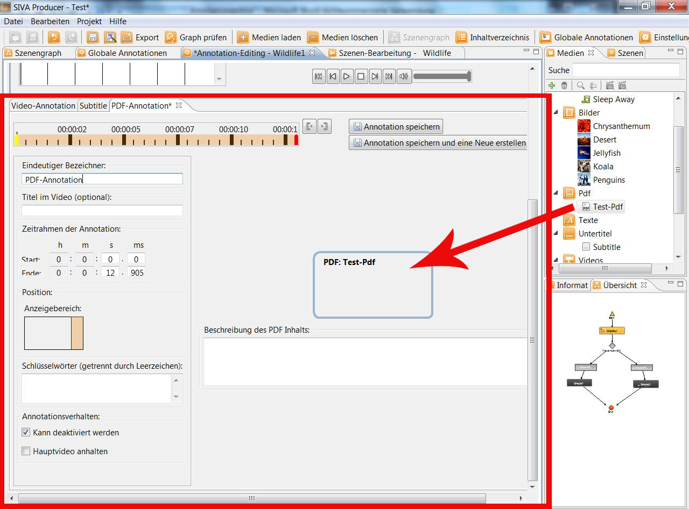
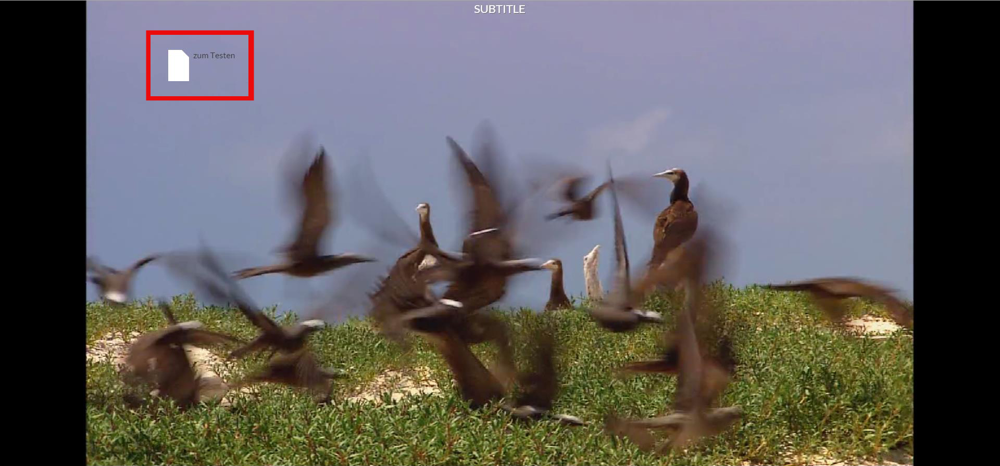

If you have created a new PDF-annotation, a PDF-file can be dragged via drag and drop from the media-repository into the
indicating range.

Now you can create a description of the content of the PDF-file, which is linked to the annotation.
When the left indicating range, directly in the picture to be precise, was chosen, this could look as follows in the finished
project:

If you click onto the symbol the PDF-file opens in an external window.
For further details see: "Create annotations"